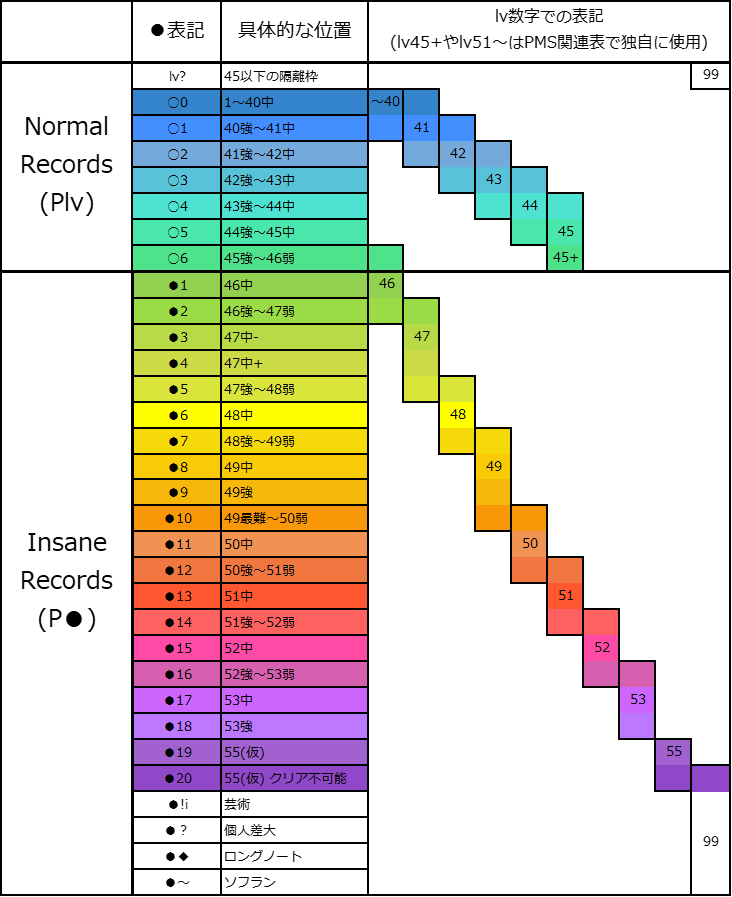

発狂PMS難易度表の更新再開直前のタイミングで取得したアーカイブです。表内のデータは LR2 基準で、今後の更新内容は反映されません。資料としてご利用ください。
■ 2023/07 発狂PMS難易度表更新再開に伴う当サイトの変更点・ガイドラインまとめ (詳しい解説はこちら)
ページ下部に難易度一覧画像を用意しました。なお難易度区分は今後の議論で更に変化する可能性があります。
本家譜面との詳しい対応についてはLv間目安難易度表を確認してください。ただし高難易度、特に●10以上は本家と発狂での体感難易度のブレ幅が非常に大きくなると思います。
PMSは独自システムの部分が多いため、難易度を本家と厳密に対応させるのが困難です。PMS Database 内でのバランスを基本に、本家との誤差は許容ください…。
・LR2/beatoraja のノマゲもしくはハードで簡単な方でのクリア難易度を、その譜面の難易度とします。
(2020/09 発狂PMS難易度表はLR2準拠ですが、昨今の事情から beatoraja も基準本体に加えます。両者間で大きく難易度が変化するものは平均を取るか、別途議論します)
・AC準拠のボタンサイズでの難易度を基準とします。ポプコン、アナコン、KBでの査定が不可というわけではありませんが、配慮をお願いします。
・正規、ミラー譜面でのプレイを基本とします。(乱S乱で明らかに数レベル易しくなる譜面は●？扱いとなることがあります)
・旧難易度のものは表記レベル+6(新基準)で登録します。
・5BUTTONS譜面は難易度体系がやや異なるため判断を保留しています。ただ、すごい詐称とかあったら教えてください。
・特に難易度のつけづらい譜面や癖の強い譜面、ネタ譜面などはlv?フォルダに分類します。
・Lv45の中でも特に難しく●1あるか判断がつかないもの(準発狂○6査定)を、lv45+とします。
・LNPMS難易度の●◆1(地力要素多めでないもの)を暫定的にLv45+フォルダに加えています。
・旧案内所と現在の判断基準との間に若干ズレがあるかもしれません。
・超高難易度譜面はまだまだ開拓中で、イージーを使用した推定を含みます。時代が追いついてきたら細分化を視野に入れます。
・個人差大(●？) ソフラン特化(●～) LN特化(●◆) としてそれぞれ仕分けします。(通常難易度が定められそうであればそちらを優先します)

■赤 … 新規登録譜面
■青 … 難易度変更があった譜面
■黄 … 発狂PMS難易度表に登録されている譜面
■緑 … BOFPMS差分企画対象譜面
■燈 … 見てない難易度(仮) 登録譜面
■青緑 … -
■ [5BUTTONS] … 中央5ボタンのみ使用されている譜面です。
■ [LR2IR登録不可] … プレイには差し支えありませんが、LR2の仕様でIR登録が出来ません。
■ [LR2推奨] [beatoraja 推奨] … BMSプレイヤー固有の仕様が意図的に使われており、難易度やゲーム性に決定的な差が生じる譜面の推奨本体です。
■ [BMSON差分] … 新フォーマット "BMSON" を使用しているPMS譜面です。LR2ではプレイ出来ませんので、beatoraja を利用してください。
■ [コメント参照] … 特殊な導入方法や再生不良の対策など特記事項がある作品です。
■ [R18BMS] … R18要素(独自基準) が含まれる可能性があります。当サイトでは該当箇所を(再現可能な形で)全年齢向けに加工し、再配布させて頂いています。
■ [案内所譜面ハッシュミス] … 譜面修正などにより、旧案内所 とPMSデータベースで bmsmd5 が異なっている譜面です。